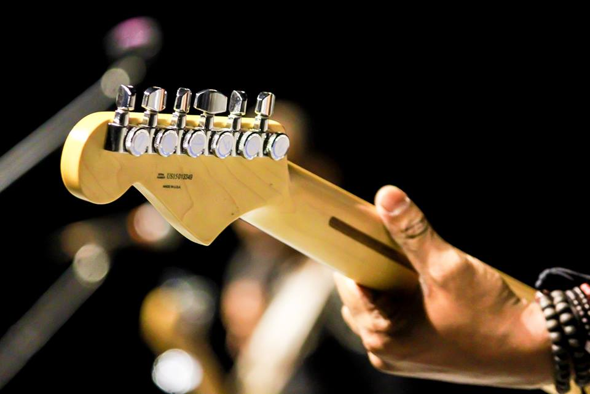

1 / 5

BANDS
2 / 5
COMPOSERS
3 / 5
D.J.
4 / 5

<INSTRUMENTALISTS
5 / 5
VOCALISTS
Music is an art form and cultural activity whose medium is sound organized in time. The common elements of music are pitch (which governs melody and harmony), rhythm (and its associated concepts tempo, meter, and articulation), dynamics (loudness and softness), and the sonic qualities of timbre and texture (which are sometimes termed the "color" of a musical sound). Different styles or types of music may emphasize, de-emphasize or omit some of these elements. Music is performed with a vast range of instruments and vocal techniques ranging from singing to rapping; there are solely instrumental pieces, solely vocal pieces (such as songs without instrumental accompaniment) and pieces that combine singing and instruments. The word derives from Greek(mousike;"art of the Muses")